Reading: Chapter S2, 20, 21
Recap and aims of this lecture
We have seen that galaxies come in many shapes, they are typically out of dynamical equilibrium because of the constant perturbations by nearby galaxies in their host galaxy cluster.
Typically the vast majority of their mass is in the form of "dark matter", which forms a (as far as we know) spherical halo much bigger than the galaxy itself.
We have seen that in the center of the MW (the galaxy that hosts the solar system), there is a "supermassive BH" (SMBH) called Sag A*, with mass \(M\simeq4\times10^{6}\,M_{☉}\).
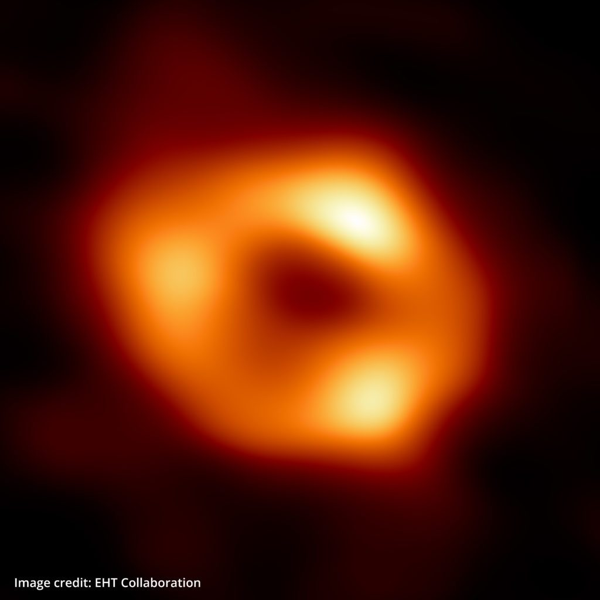
This was first inferred from the Keplerian motion of stars in the innermost part of the galaxy, which constrain the total mass and the maximum extent of this mass distribution. Later, the tenuous accretion disk around it was resolved through radio-interferometry by EHT.
Sag A* was actually the second SMBH imaged by EHT, after they released this image of the accretion disk and the shade of the BH in the galaxy M87 (one of the 110 objects in the Messier catalog!):
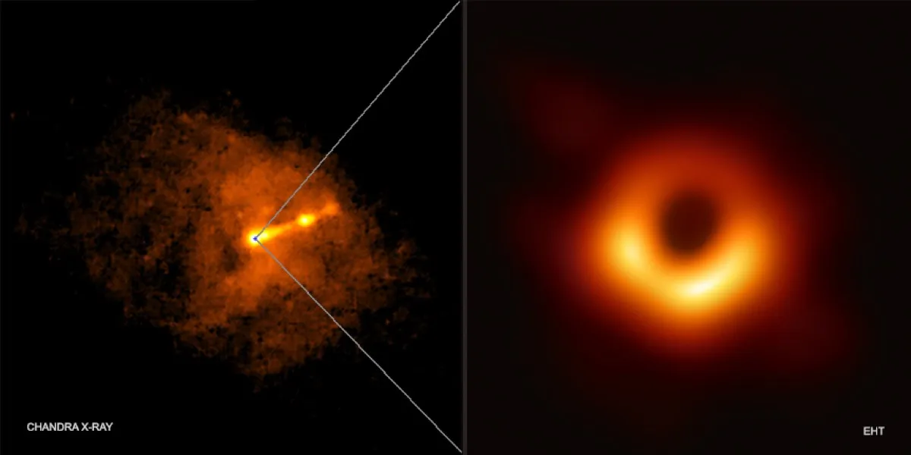
These two SMBH and host galaxies (MW and M87) can both be imaged by EHT: the resolution it can achieve is of ∼25 μ arcsecond (recall 1 arcsec = 1/60 arcminutes and 1 arcminute = 1/60 degrees). In the MW, Sag A* has a mass of \(4\times10^{6}\,M_{☉}\) and distance of \(D\sim 8\,\mathrm{kpc}\), while M87 has a much more massive BH of \(6\times10^{9}\,M_{☉}\) and is at a distance of \(D\sim16\,000\,\mathrm{kpc}\).
The ratio \(M_{\rm SMBH}/D\sim 0.5\times10^{3} M_{☉} \mathrm{pc}^{-1}\) is the same for both these objects! We will see below that the radius of a BH is proportional to it's mass, so \(M_{\rm SMBH}/D\propto R_{\rm SMBH}/D\): Sag A* and M87 SMBH have the same angular size on the sky, making them both viable targets for EHT.
What is a black hole?
Until the ∼ late 1960s, BHs were thought to be a "mathematical curiosity", a particular solution of Einstein's equations that describe gravity beyond the Newtonian model, with general relativity (GR).
The core idea of general relativity
We cannot derive here GR, but we can focus on the key point that conceptually updates Newton's law of gravity. In Newtonian gravity space-time is a fixed structure in which gravity can propagate at infinite speed: if you remove the Sun, immediately the Earth lacks the centripetal gravitational pull to stay on its orbit and is launched along the tangent.
Einstein (in his "annus mirabilis" 1905) showed however that he could derive all laws of electromagnetism in vacuum postulating that the speed of light in vacuum is the maximum speed for the propagation of information (e.g., the info that the Sun is still there pulling the Earth onto its orbit): this means Newtonian gravity is fundamentally incompatible with special relativity, the theory that correctly describes the dynamics of objects approaching the speed of light.
In 1916, Einstein (and shortly after Hilbert – no lone geniuses, but an active and debating community!) published his theory of general relativity that fixes this problem.
In this picture, gravity is actually an "apparent force" due to the curvature of space-time (much like the centrifugal force in a rotating frame arising because the frame is not inertial): the Earth orbit's the Sun not because of it's attraction working as a centripetal force, but because the Sun's mass curves space time around it and the Earth is trying to "go straight on a curved surface", like the interior of a bowl!

Like any good new theory of something well understood empirically, GR reduces for small masses and low velocities to Newtonian gravity, and extends it to a new framework for large masses and speeds close to the speed of light. Einstein's field equation describes how masses bend space-time and at the same time how space-time imposes to free-falling masses to move (i.e., how masses only under the influence of gravity move):
Black holes
One week only after Einstein's publication, Karl Schwarzschild, from a hospital bed during WWI, published solutions to Einstein's equation for a spherically symmetric space time around a point mass.
N.B.: The assumption of spherical symmetry helps in the calculations! Schwarzschild looked for the simplest solution possible first!
What he found is that there is a region of space around a mass with radius \(r_{g} = \frac{GM}{c^{2}}\) such that it would take infinite energy for an object within this region to escape the gravity of the mass \(M\). In other word, the escape velocity from within this region is faster than \(c\) and no object/information can reach it! This means not even photons can escape this region, and thus the name "black hole".
Note that any mass compressed sufficiently (so that it is smaller than its \(r_{g}\)) can be a BH! For instance, for the Sun, \(r_{g}\sim 3\,\mathrm{km}\): if you were to compress it from \(R_{☉}\simeq7\times 10^{10}\,\mathrm{cm}\) below \(r_{g}\) it would be a BH. BHs can have any mass in theory.
N.B.: far away from this, \(r\gg r_{g}\) the space-time of Schwarzschild's solution becomes the "flat" spacetime of Newtonian gravity as expected.

So technically, inside a BH matter (but \(E=m\gamma c^{2}\), so all energy) falls towards the center, where "space-time" is "punctured" in GR. This singularity has \(r\rightarrow0\) and \(\rho\rightarrow+\infty\): the appearance of an infinite density suggests that interactions other than gravity will start to play a role: to treat the physics at the singularity we need a model of gravity (described by GR) and the other forces (described by quantum mechanics, QM). These two are still separate field without a synthesis between them: ultimately this suggests that \(\rho\rightarrow+\infty\) is a symptom that we cannot ignore QM anymore but we don't have a better theory to use.
At the even of horizon though (the surface that has escape velocity \(c\)) nothing physically special is happening: if you were passing through the event of horizon, you wouldn't notice anything special (a part from the fact that the gas around you is getting very hot, and gravity is stretching you, these things were happening at \(r_{g}+\varepsilon\) and will continue at \(r_{g}-\varepsilon\) for small distances \(\varepsilon\)).
N.B.: from 1916 (Einstein's first paper and Schwarzschild solution of the equations), it took ∼40 years for Roy Kerr to find a second solution, for a spacetime around a "rotating" point mass in 1963. Also note how BHs are both a theoretical/mathematical playground to study gravity in a simple curved space-time, and astrophysical objects of interest!
How to detect a BH
Since there is nothing to see for a BH, until the late 60s they remained a theoretical "curiosity".
High-energy emission from infalling gas
However, with the advent of rocket powered X-ray observatories, sources of X-ray photons other than the Sun started appearing. This required sending the telescopes above the Earth's atmosphere, which blocks these short-wavelengths, high-energy photons.
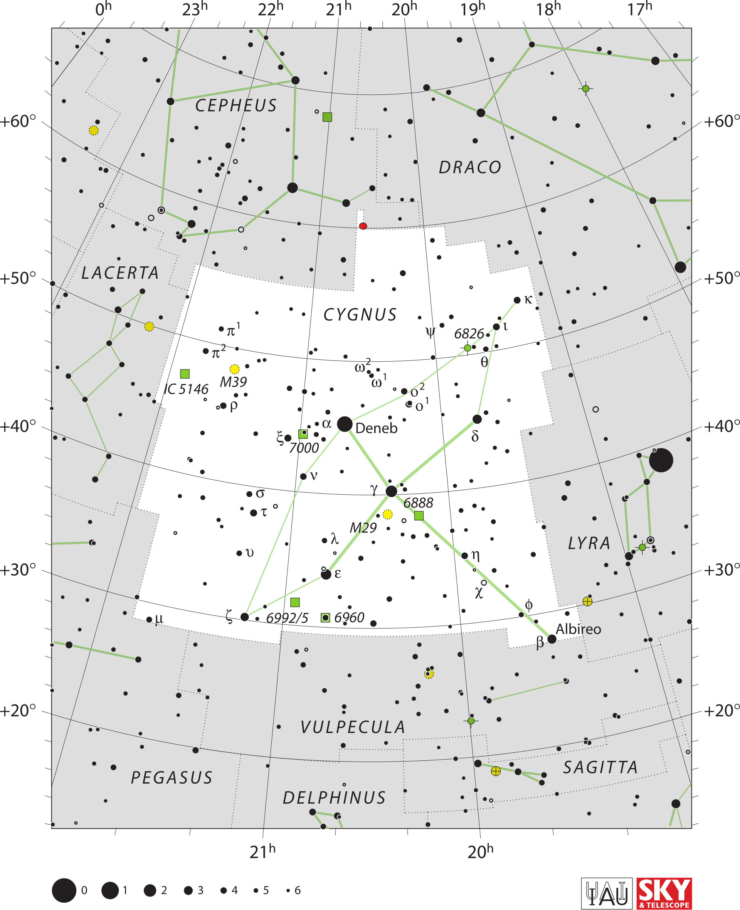
The first source detected was Cyg-X1, and Webster & Murdin 1971 showed this X-ray source was coincident with a particular star suggesting a physical association between the star (optical source) and the X-rays. Bolton 1972 used then Kepler laws and geometric arguments (same as for the SMBH in the center of the MW 50 years later!) to show that the star and X-ray source were indeed a binary system, made of a star, and an object that had to be massive and compact (from Kepler laws). If the X-ray source were a second star, it should be visible in the optical too: this became evidence that it could not be a star and had to be a BH.
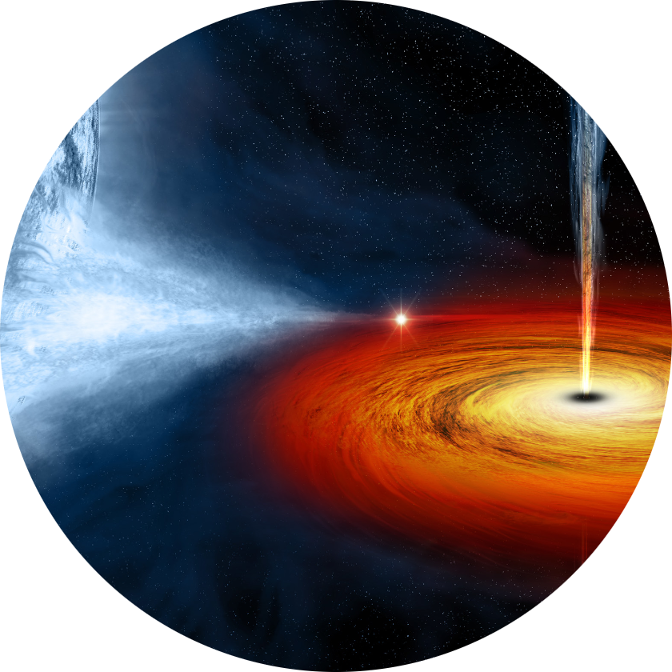
The X-rays are produced by gas coming from the star (either its wind, or the star is too big to fit the volume of space dominated by its own gravity and overflows) and falling onto the BH.
Because this gas in the frame of the binary acquires angular momentum (due to the Coriolis force), as it reaches the BH it forms an accretion disk, and spirals downward (N.B.: if the star was made of DM this would not work, because the infalling DM particles could not torque each other and exchange energy as a collisional gas). The release gravitational potential energy heats up the gas, and remember that thermal radiation peaks at shorter wavelengths/higher energy for higher temperatures): the gas becomes so hot that its peak thermal emission is in the X-rays.
X-ray binaries became the first astrophysical object recognized as a BH: the X-rays that we see come from matter outside the event of horizon, in the process of falling into the BH.
Orbital motion of stars
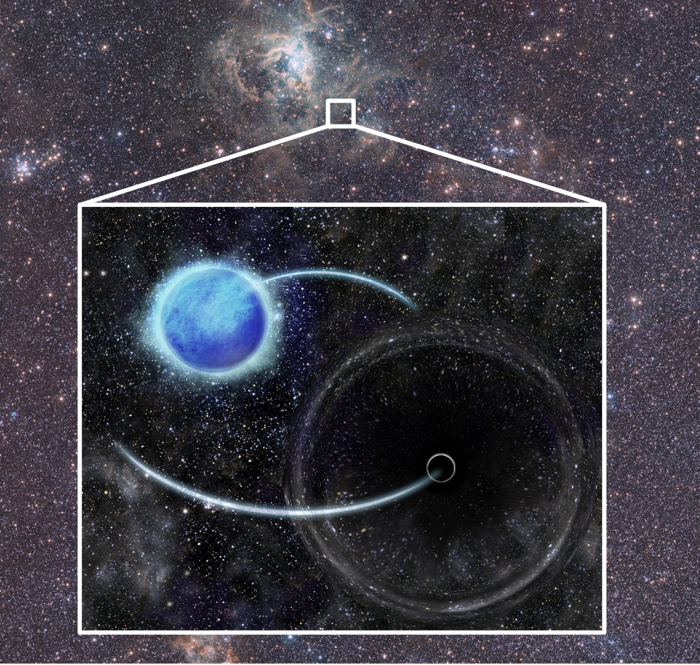
In 2022, Shenar et al. used a large spectroscopic campaign to characterize the binary orbits of stars in the 30 Doradus region of the LMC, and found a X-ray quiet system which could also be geometrically constrained to host a BH (much like Cyg X1), ushering the era of astrometric detection of BHs, that is not directly seeing gas falling in the BH, but inferring its presence from the orbital motion of companion stars.
Since the advent of the Gaia space-mission we have expanded this method, to include wide orbits where the radial velocity shifts would be too small, but that can be resolved by Gaia's astrometric precision. This has so far produced 3 stellar-mass BH, with hundreds expected with Gaia DR4 in December.
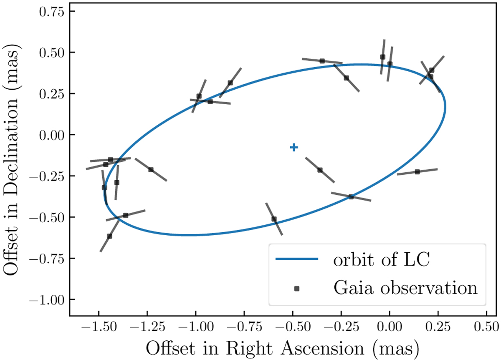
Orbital motion of gas
So far, we have talked about methods capable of measuring BHs in the stellar-mass range (\(M\sim 10-100\,M_{☉}\)). But if you have a much bigger BH, \(r_{g}\propto M_{\rm BH}\) grows, and if it is large, maybe mass doesn't fall that far before getting in the BH, and doesn't heat up all the way to producing X-rays!
In fact, the very first ideas of BH predate Einstein, and were proposed by Mitchell and Laplace, who in the 18th century proposed objects so large that even light could not escape them.
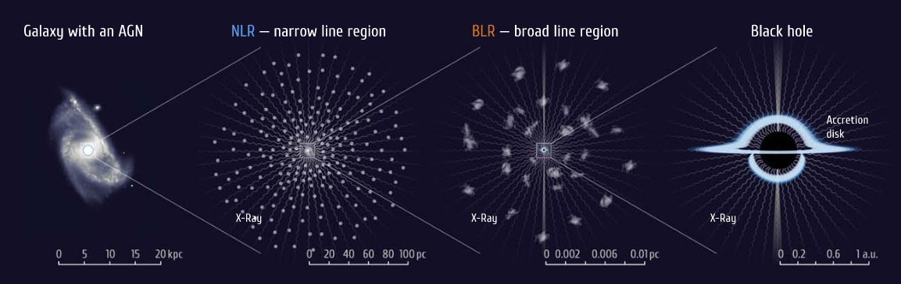
As gas gets closer to the BH (shorter orbital separation \(a\)), its orbital period has to decrease (faster orbit) by Kepler's laws: this means taking a spectrum of the central region of a galaxy, which is unresolved we will see lines (typically in emission) that are getting broader and broader (because of Doppler shifts along the unresolved orbit) as we get close: from the width of spectral lines we can measure BH masses in the center of galaxies!
These spectra were first detected as quasars (= quasi star) and interpreted as signatures of accreting SMBH.
Gravitational-waves
Einstein himself derived another consequence of GR initially interpreted as a non-physical mathematical curiosity: gravitational waves.
If space-time is bent by matter, an oscillating matter distribution can generate an oscillating space-time even far away from the source (N.B.: because of conservation of momentum, this requires a quadrupole moment), that is a "gravitational wave".
N.B.: Do not confuse this with a gravity wave which is a wave in a fluid (e.q., water) where the restoring force is gravity.
In 1975, the discovery of the double pulsar by Hulse and Taylor, showed an inspiral consistent with the emission of GWs indirectly confirming their physical nature (Nobel in 1993), and in 2015 we had the first direct detection of GW from a binary black-hole merger!
Merger of two stellar-mass BHs
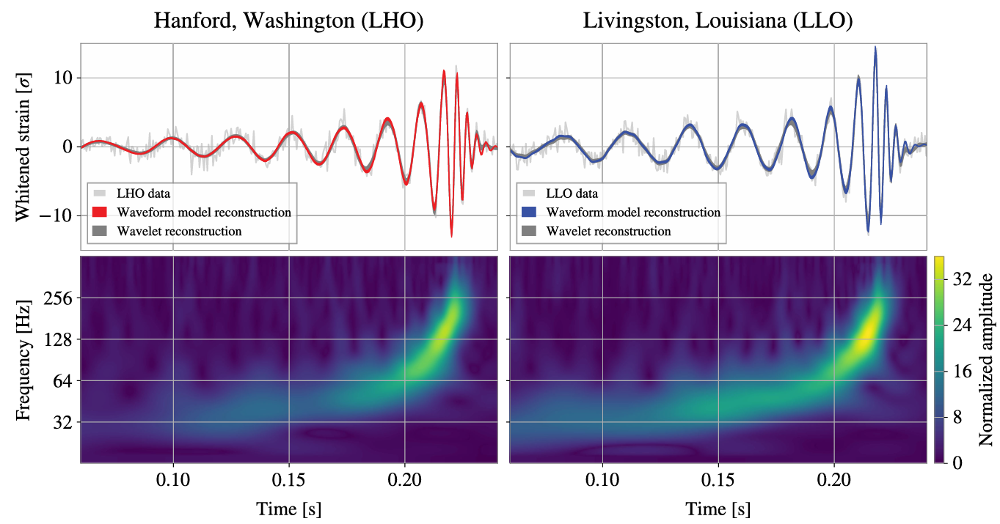
GW150914 was the first BBH merger detected in GWs, which:
- proved the existence of \(\sim30\,M_{☉}\) BHs
- proved the existence of binary BHs (unknown until then!)
- proved the direct detectability of GWs
This discovery has the huge implication that now GW provide a completely new way to explore the Universe, with the potential of being as revolutionary as the invention of telescopes and their astronomical application by Galileo had.
We can now not only "see" the Universe but also "hear it", since ground-based GW detector operate in the same wavelength range as audible sound (but GWs ≠ sound waves! they propagate in vacuum unlike sound for example).
Future of GWs: space-based GW and pulsar timing arrays for SMBH
In the 2040s, several space-based GW detectors, sensitive to much longer wavelengths of GWs are planned.
The most famous is probably LISA, which will be sensitive to binary SMBH (e.g., formed by galaxy mergers) and double WDs in the galaxy. The first proof-of-concept of the 3 spacecrafts has already been successfully launched.
At the same time, the longest GW wavelength can be probed using the entire galaxy as a detector with pulsar timing arrays (PTA).
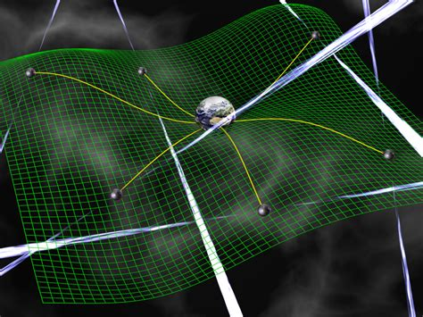
Lensing
We have already hinted at gravitational lensing in the context of DM. The Roman space telescope, currently on its way to the L2 point behind the Earth as seen from the Sun, promised to find 100s of (stellar mass) BHs throughout the galaxy thanks to its wide field of view and galactic center survey (where the density of stars is highest).
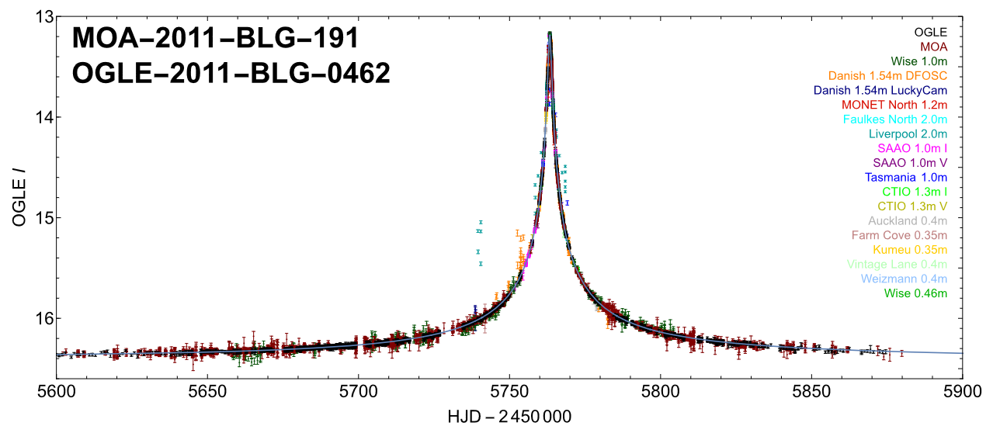
BH mass distribution
Effectively, has you can infer from the history of BH detection, the game is to find objects too massive and compact in radius to not be visible.
With a variety of techniques, we are now probing the mass distribution of BHs throughout the Universe:

Understanding this landscape is a primary ongoing goal of the community.
Stellar mass BHs
These are the end point of the evolution of massive stars, reaching up to ∼100s of solar masses – I have done some research on the most-massive stellar-mass BHs, relevant to present GW detections.
In general, the question of stellar collapse and possible explosion, and understanding the formation of these BHs is still open, despite a lot of recent progress.
Intermediate mass BHs
We barely see any BHs with masses between \(\sim 10^{3}\,M_{☉}\) and \(\sim 10^{6}\,M_{☉}\). These are theorized "intermediate mass BHs".
There have been a few claims, e.g., the detection of ultra-luminous X-ray sources. Of these, only one (HLX-1) still stands: for many other ULXs pulsations have been found, which implies the existence of a solid surface oscillating, and thus not an event of horizon (which is not a physical boundary that can oscillate).
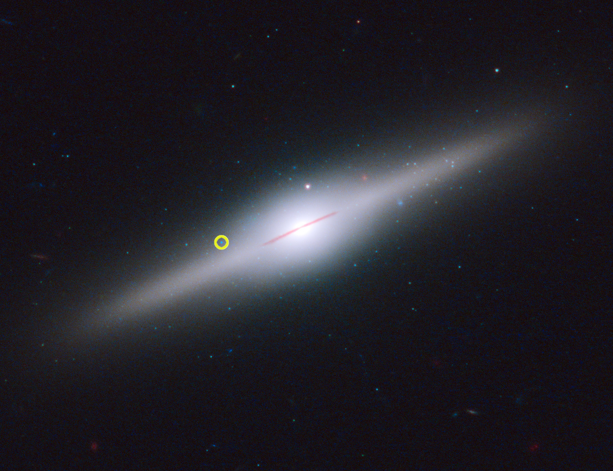
The reason for an apparent lack of detection of IMBHs is an open puzzle, related to the formation of SMBHs (see below).
Super-massive BHs
Super-massive (\(\ge 10^{6}\,M_{☉}\)) BHs have been first discovered in the center of galaxies as quasars:
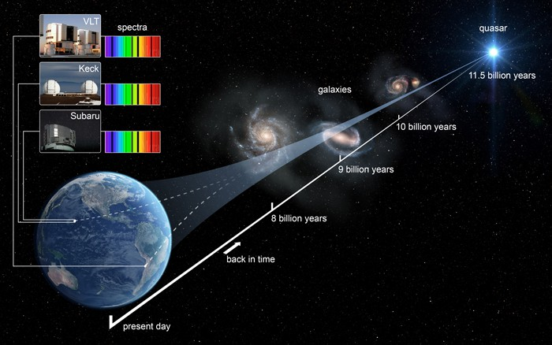
These are cosmological objects (distances of the order of the size of the observable Universe!), and so their light has to filter through a large swath of intergalactic clouds, galaxies with their interstellar medium, etc, each leaving their absorption imprint on the spectrum.
We now know SMBH can be at the center of large galaxies, and we have seen that they probably co-evolve: the SMBH mass and mass of the galaxy are tightly correlated across many many orders of magnitude.

Formation of SMBH
Problem: JWST is finding many massive galaxies and SMBH in the early Universe. How can we explain their very rapid growth? And how does this relate to the apparent rarity of IMBH?
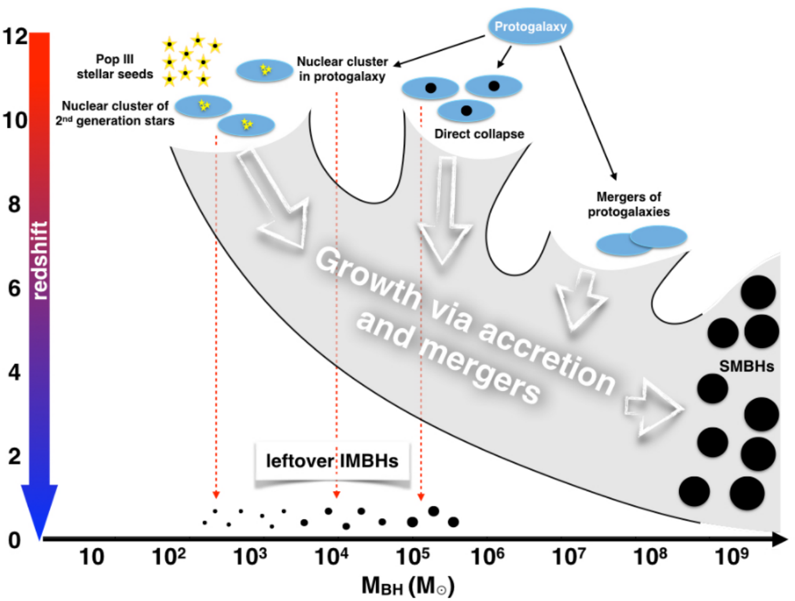